Спортивна діяльність
Цьогорічна війна не завадила нам веселитися. Багато учнів спробували себе в стрільбі
з луку, підкорили
одну з чотирьох стихій на каяках, навіть влаштувати перегони на велосипедах під пильним і докірливим
поглядом інструктора.
Наш турнір з настільного тенісу був перформансом, за яким спостерігав весь табір. Якщо хтось і не був
впевненим в своїх силах, то постійні тренування точно підвищили рівень його гри. Волейбол, який
закінчувався з настанням темноти, баскетбол і вибивний не оминали наше дозвілля.
Декілька слів про наш не маленький клуб настільних ігор. Мафія, шахи, шашки в масштабі, покер, інші
різновиди гри в карти - це, звичайно, класика, а ще повний арсенал учнів, вожатих і самого табору. Я вже
бачу, скільки коштів витратять батьки на поповнення домашньої колекції з уподобаних ігор.
Компанія завжди знайдеться, наше діло - запропонувати, а далі вибір за вами.


 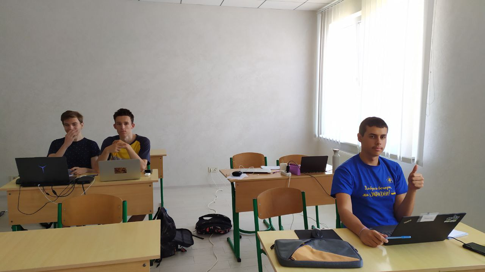
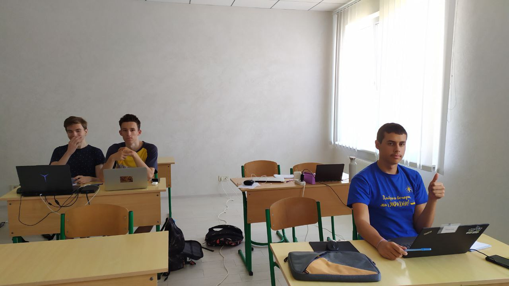
 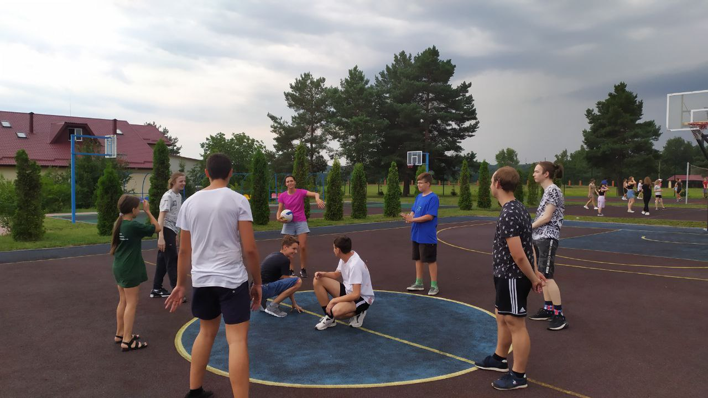
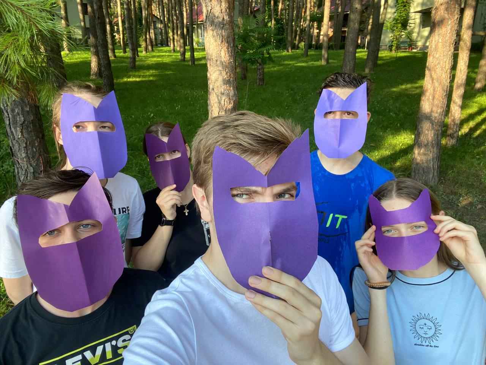
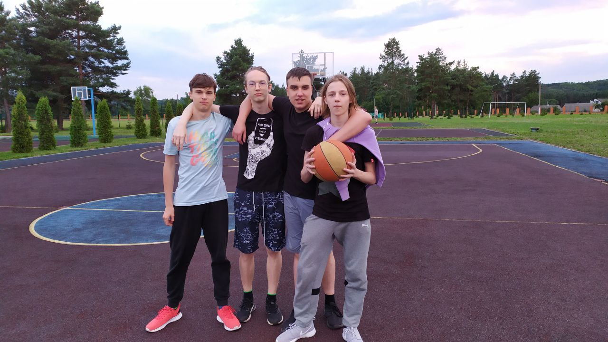
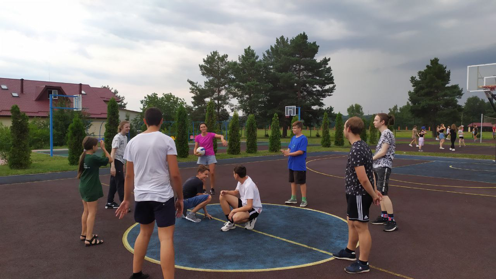
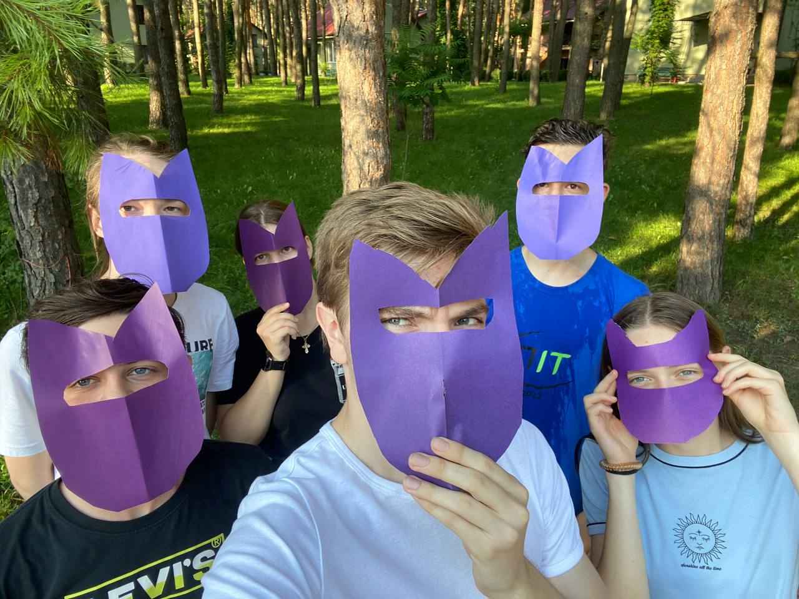
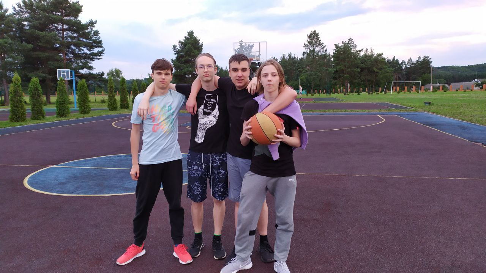
 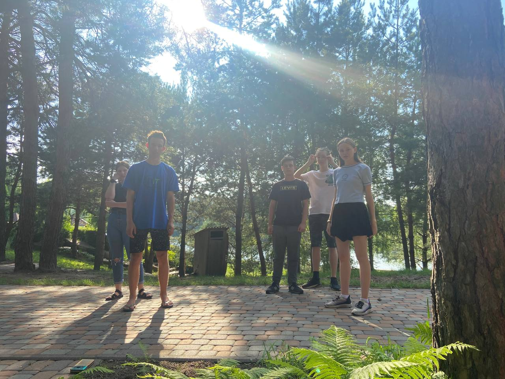
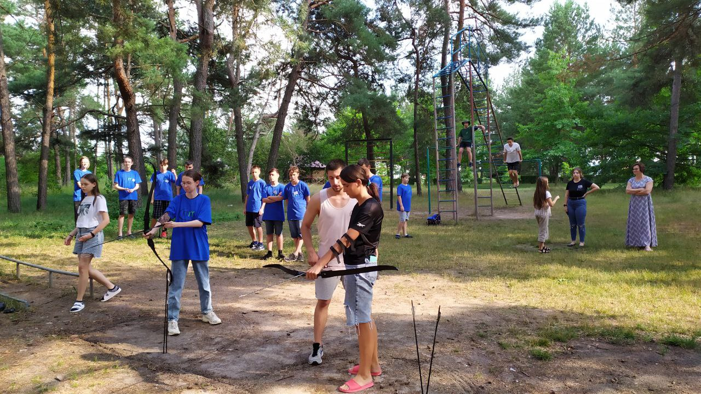
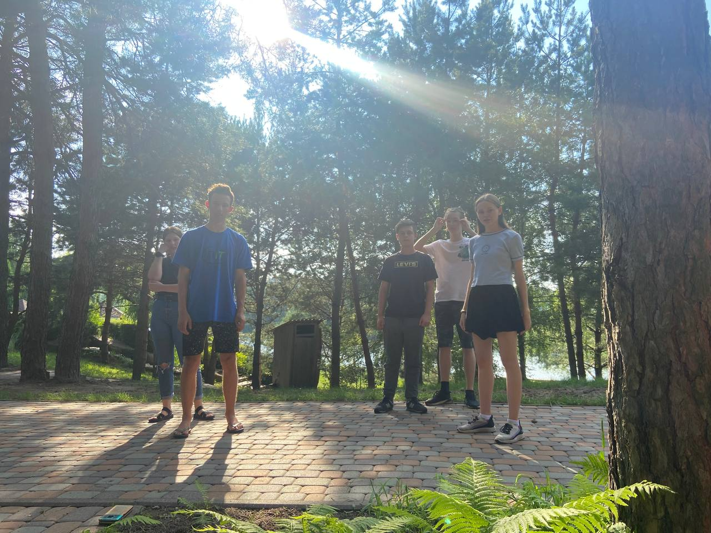
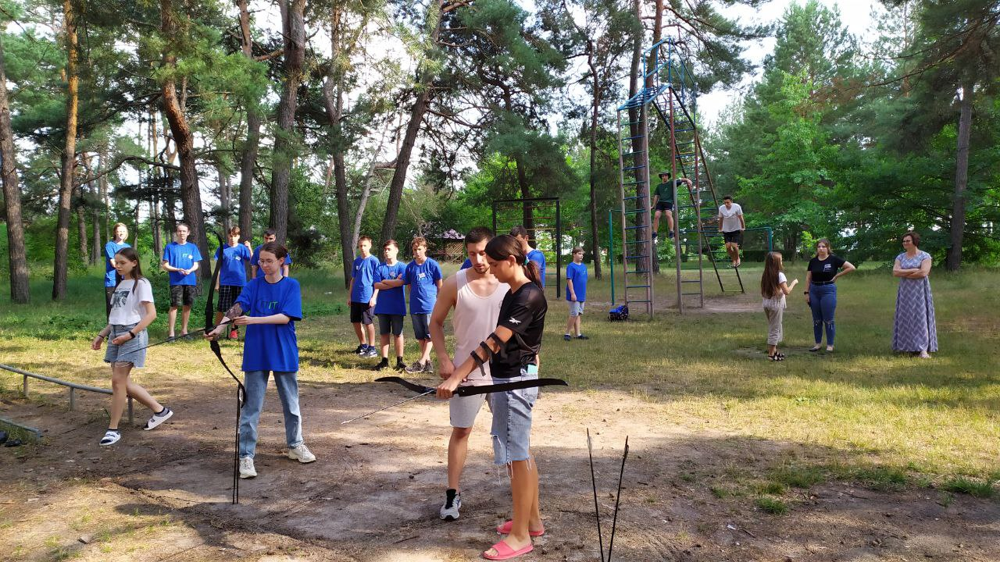